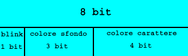
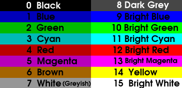

Canale a video
Per vedere quello che facciamo sulla macchina abbiamo bisogno di un output sullo schermo del monitor, che stampi scritte a video, che faccia scorrere il testo (scroll), che cancelli e pulisca lo schermo e stampi molti tipi base.
Per differenziarlo dalla cout del c++ standard noi lo chiameremo kout.
Vediamo innanzitutto di approfondire il funzionamento della scheda video. Di default lo schermo è impostato ad una risoluzione di 80x25 caratteri. Se vogliamo cambiare risoluzione del testo prima di andare in pmode nel bootloader dobbiamo inserire qualcosa del genere:
mov ax, 1112h
int 0x10
Queste 2 righe ci permettono di fare in modo che la risoluzione del testo sia 50x80. Date le mie scarse capacità visive useremo la 25x80 ^___^ .
Ogni carattere occupa in memoria 2 byte, il primo contiene il codice ascii del carattere, il secondo contiene gli attributi del carattere.

Mentre i colori sono questi:

I caratteri vanno copiati in memoria dall'indirizzo 0xB8000 che è proprio dove la scheda video cerca i dati per disegnare a video. Se vogliamo ad esempio scrivere "CIAO" su schermo partendo dall'angolo in alto a sinistra, con sfondo nero e scritta bianca, la memoria dovrà contenere una cosa del genere:
| ' C ' |
0xB8000 |
| 7 |
0xB8001 |
| ' I ' |
0xB8002 |
| 7 |
0xB8003 |
| ' A ' |
0xB8004 |
| 7 |
0xB8005 |
| ' O ' |
0xB8006 |
| 7 |
0xB8008 |
|
|
Quindi possiamo iniziare a scrivere:
enum { NERO,
BLU,
VERDE,
CELESTE,
ROSSO,
VIOLA,
MARRONE,
BIANCO_SPORCO,
GRIGIO,
BLU_CHIARO,
VERDE_CHIARO,
CELESTINO,
ARANCIONE,
ROSA,
GIALLO,
BIANCO,
MAX_COLOR = 15,
LAMPEGGIO = 128
};
typedef unsigned char colore;
Inizialmente la nostra classe può avere questo aspetto:
class Video{
public:
Video();
void clear() ;
void put(const char c) ;
void put(const char* c) ;
void set_text_color( colore mycolor);
void set_back_color(colore mycolor);
colore get_text_color(void);
colore get_back_color(void);
private:
word *videomem ; //puntatore alla memoria
size_t off ; //offset usato per le coordinate della y
size_t pos ; //indica la posizione della x
//restituisce il colore nella forma color<<8
word get_formed_color();
colore color;
//li metto come costati per dare un significato ai numeri
static const size_t max_x = 80;
static const size_t max_y = 25;
static const size_t screen_size = max_x * max_y;
};
L'unica cosa su cui soffermarci è il tipo della variabile videomem. Abbiamo usato una word perché questo ci permette di gestire ogni carattere come se fosse un singolo elemento.
Iniziamo dall'implementazione del costruttore:
Video::Video(){
pos=0 ; off=0 ; //la posizione iniziale è 0,0
videomem = (word*) 0xB8000 ; //imposto il puntatore per farlo puntare all'inizio della memoria video
set_text_color(GIALLO);
set_back_color(BLU);
clear(); //puliamo lo schermo
}
Quindi vediamo subito la clear:
void Video::clear() {
unsigned int i;
for(i=0; i
La funzione get_formed_color() ci permette di avere il byte del colore organizzato nella maniera già vista sopra ma shiftato di 8 bit cosicché facilmente si aggiunge il codice ascci del carattere e si forma la word intera.
Vediamo le implementazioni quindi della get_formed_color(), della set_back_color() e della set_text_color():
word Video::get_formed_color(){
return color<<8;
};
void Video::set_text_color( colore mycolor){
color = color & 0x70; //quindi ottengo 0xxx0000
color |= (mycolor & 0xF);
}
void Video::set_back_color(colore mycolor){
//azzero i bit deillo sfondo
color &=0x8f; //ottengo x000 xxxx
//preparo i bit dello sfondo
mycolor &= 0x7; //cancello tutti i i bbit tranne i primi tre quindi alla fine ottengo 0000 0xxx
mycolor <<=4; //shifto tutto di 4 in questo modo li allineo per bene e ottengo 0xxx 0000
//setto il colore per bene
color += mycolor;
}
I commenti mi sembrano abbastanza esplicativi, vediamo la funzione più importante di tutte, la put():
void Video::put(const char c){
if(c == '\n'){
accapo();
return;
}
if(c == '\t'){
for(int i = 0; i < tab_size; i++)
put(' ');
return;
}
if(pos>=max_x){
accapo();
}
if(off>=screen_size)
{
//faccio lo scroll di una riga dello schermo
for(int i=0; i < screen_size - 80; i++)
videomem[i] = videomem[i+80];
for(int i = screen_size-80; i < screen_size; i++)
videomem[i] = videomem[off + pos] = (unsigned char) ' ' | get_formed_color() ;
pos = 0; off-=80;
}
videomem[off + pos] = (unsigned char) c | get_formed_color() ;
pos++ ;
}
Lo scroll dello schermo lo gestiamo copiando tutto il contenuto della memoria di una riga in alto.
L'ultima funzione che analizziamo è la accapo():
void Video::accapo(){
//coloro con il colore dello sfondo i caratteri rimanenti per arrivare alla fine dello schermo
while(pos
Bene il resto della classe lo si può vedere direttamente dal file che, tra l'altro, è ben commentato.
Analizziamo un aspetto legato alla nostra classe video. Dunque creiamo un oggetto globale di questo tipo:
Video mystdout;
Video& kout = mystdout;
Il nostro oggetto è globale; quindi all'avvio del css dobbiamo eseguire noi il costruttore, dato che non possiamo usare il loader degli eseguibili di linux.